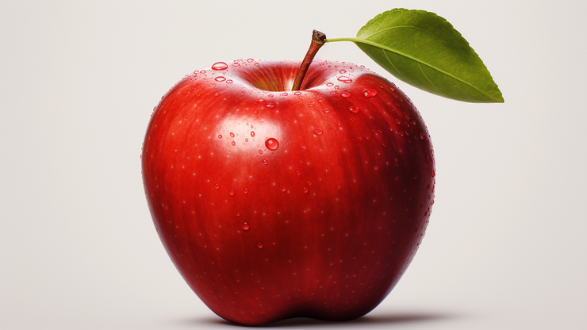

Apel

Apel adalah jenis buah-buahan, atau buah yang dihasilkan dan pohon buah apel. Buah apel biasanya berwama merah kulitnya jika masak dan (siap dimakan), namun bisa juga kultnya berwama hijau atau kuning Kulit buahnya agak lembek, daging buahnya keras. Buah ini memil beberapa bij di dalamnya
Orang mulai pertama kali menanam apel di Asia Tengah. Kini apel berkembang di banyak daerah di dunia yang suhu udaranya letih dingin. Nama ilmiah pohon apel dalam bahasa Latin ialah Malus domestica. Apel budidaya adalati keturunan dan Aralus sieversi asal Asia Tengah, dengan sebagian genom dari Malus sylvestris (apel hutantupet sar).
Kebanyakan apel bagus dimakian mentali-mentah (tak dimasak), dan juga digunakan banyak jenis makanan pesta. Apel dimasak sampal lerrbek untuk dibuat saus apel. Apel juga dibuat untuk menjadi minuman sari buah apel.
- Meningkatkan daya memori
- Baik untuk usus
- Meningkatkan kekebalan tubuh
- Baik untuk jantung
- Menurunkan tekanan darah
- Mengurangi risiko diabetes
Daftar harga
| Jenis apel | Harga | |
|---|---|---|
| Per kilo | Per biji | |
| Apel Manalagi | 50.000 | 5.000 |
| Apel Fuji | 60.000 | 6.000 |
| Apel Anna | 70.000 | 7.000 |
| Apel Merah | 55.000 | 5.500 |